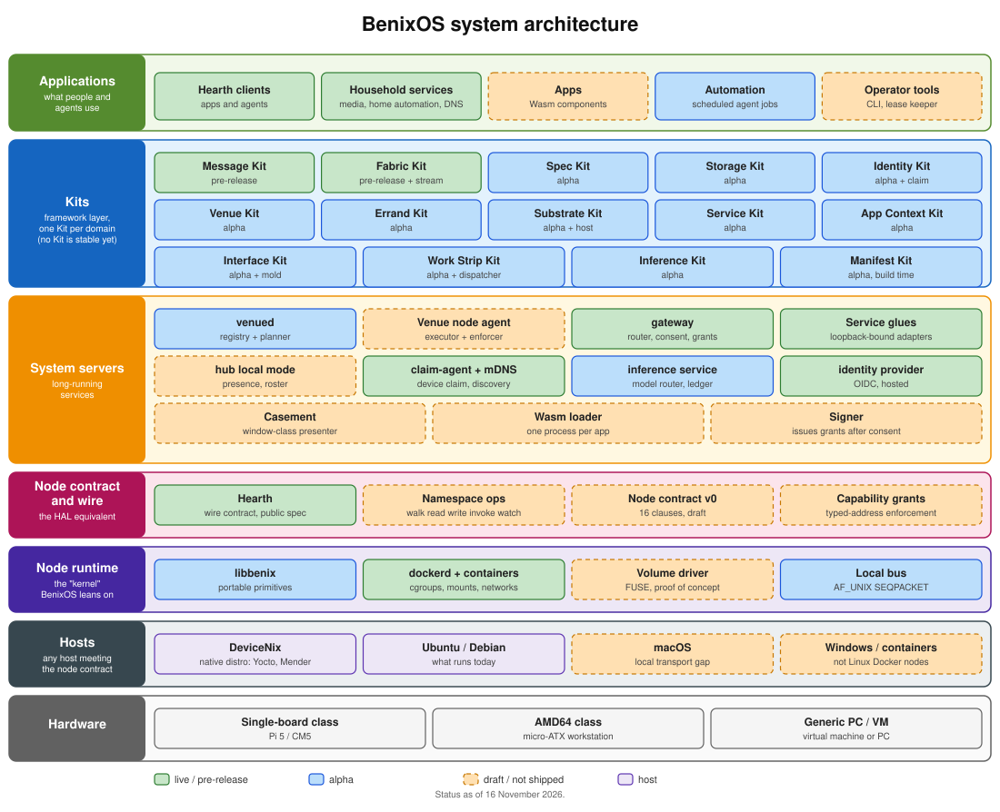

The BenixOS Book
BenixOS is a distributed operating system. It is composed of Kits, speaks the Hearth protocol, and runs on any host that meets a small node contract. This book describes its design and what exists today.
Under development
Most of the code described here is unpublished, and several pieces are drafts. Each chapter opens with a State box that says what is built and what is not. See About this book.
